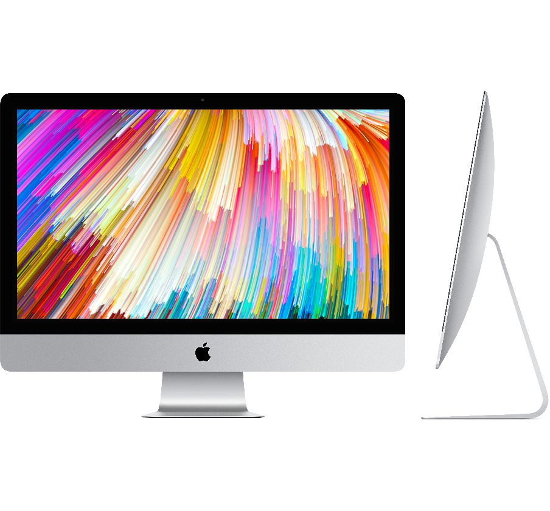

During my time at Apple, I interned in the MacPD group and worked on the 2017 21.5" and 27" iMacs as well as other products.
My growth as an engineer and designer was huge as I was exposed to mass manufactured components for the first time. I learned how to get a part from its initial design stages to one where it arrives in the hands of millions of consumers.
During my time here, I worked on a wide array of components. I breathed Tolerance Analyses, Finite Element Analysis Simulations, Laser Cutting, CAD, and many more essential jobs. I designed fixtures and did testing on different mechanical properties of these components. I rapid prototyped parts in order to accelerate designs downstream. I worked with vendors and took my first steps into China. I worked with bash scripts, python scripts, and statistics software to make sense of data. I worked with cross disciplinary teams to collaborate on certain tasks.
I learned a lot at Apple.